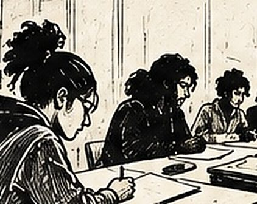

Du texte au clip : cinq jours de rap avec des apprentis du bâtiment, à Mallemort
À Mallemort, une quinzaine d'apprentis du CFA ECIR ont eu cinq jours pour écrire un rap, l'enregistrer en studio et en tourner le clip — un projet mené avec le studio Owl Records, né d'un appel à projet du CCCA-BTP sur la citoyenneté.
Auteur : Esope · Intervenants slam : Esope

Écrire un texte de rap, l'enregistrer en studio, puis en tourner le clip : c'est le défi que se sont lancé une quinzaine d'apprentis du CFA ECIR, à Mallemort, en cinq jours. Un format complet, du texte à l'image, mené avec mon ami Tyger et son studio d'enregistrement Owl Records.
Le contexte : un appel à projet sur la citoyenneté
Le projet est né d'un appel à projet du CCCA-BTP (Comité de concertation et de coordination de l'apprentissage du bâtiment et des travaux publics), auquel l'ECIR — école de la construction, des infrastructures et des réseaux — a répondu. L'idée de départ portait sur la citoyenneté : santé, gestion du budget, inégalités, injustices, discriminations. Des ateliers et rencontres avaient déjà permis d'explorer ces thèmes l'année précédente. « Après avoir réfléchi, il est apparu qu'ils souhaitaient tous faire un rap, voire même un clip », résume Marie Jouffrit, adjointe à la direction chargée de la pédagogie et de l'éducation de l'établissement. C'est cette envie, exprimée par les apprentis eux-mêmes, qui a fait naître le projet.
Le déroulement des cinq jours
Cinq jours pour aller du texte au clip, ça ne laisse de temps mort à aucune étape. Les premières séances ont été consacrées à l'écriture : rimes, figures de style, construction d'un couplet — chacun garde son propre texte, sa propre voix, intégrée ensuite dans un morceau collectif d'environ sept à huit minutes. Passé ce cap, direction le studio Owl Records de Tyger pour l'enregistrement, puis le tournage du clip : scénario, plans, tenues, tout est passé entre les mains des apprentis avant le montage.

Les techniques travaillées
Le travail d'écriture a suivi une progression classique du rap — rimes, figures de style, construction du couplet — mais avec un principe non négociable : chacun écrit son propre texte. Je ne suis pas là pour leur dire quoi écrire ou quoi dire, ils restent totalement libres du fond ; mon rôle se limite aux techniques et aux conseils.
Ce que les apprentis ont travaillé
Au-delà de l'écriture, ce projet a mis les apprentis aux commandes de la partie audiovisuelle : scénario du clip, choix des plans, des tenues. Tyger et moi nous sommes occupés du montage et de la réalisation, mais chaque décision créative en amont venait d'eux. L'objectif : que chacun s'approprie vraiment le projet, du premier couplet jusqu'au clip fini.

Le moment marquant
Les retours des apprentis, une fois le projet lancé, ont confirmé l'intérêt du format. « C'est passionnant, ça nous permet de changer un peu des cours, c'est vraiment sympa que le CFA nous propose cette activité », confiait Kélyan Figuière, 16 ans, en deuxième année de mécanique. Son camarade de classe Jordan Lemaire, 17 ans, ajoutait : « Ce rap, il défend plusieurs causes, donc ça nous plaît beaucoup. » Deux réactions qui résument bien ce que je recherche avec ce genre de projet : que le fond citoyen ne soit jamais un prétexte, mais parte réellement d'eux.
Ce que ce projet a permis d’explorer
Ce projet a confirmé qu'un format complet — écriture, studio, clip — change la nature de l'engagement des apprentis : le texte devient un vrai objet fini, pas un exercice sans suite. Si votre CFA, votre établissement ou votre structure prépare un projet de ce type, avec ou sans studio d'enregistrement, parlons du format qui conviendrait.